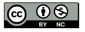
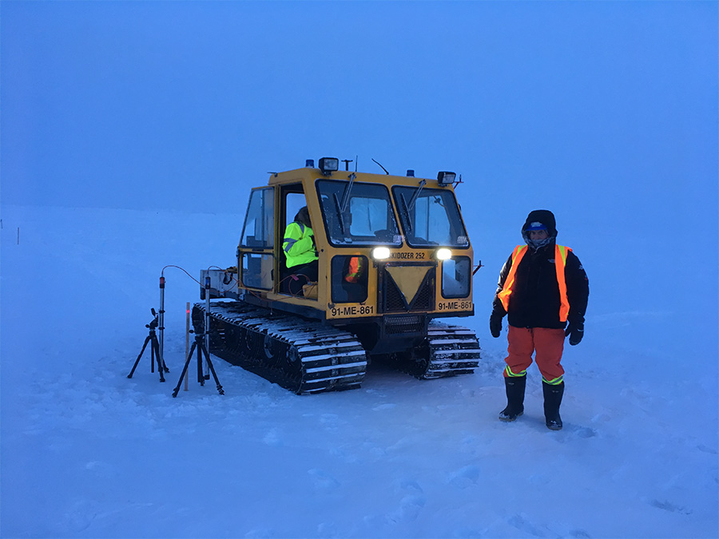
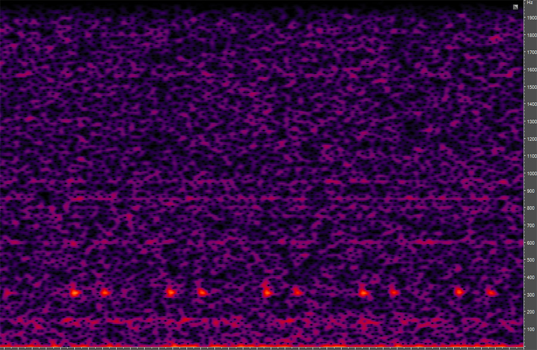
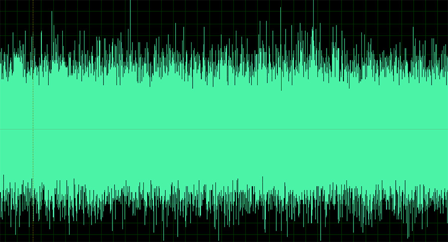
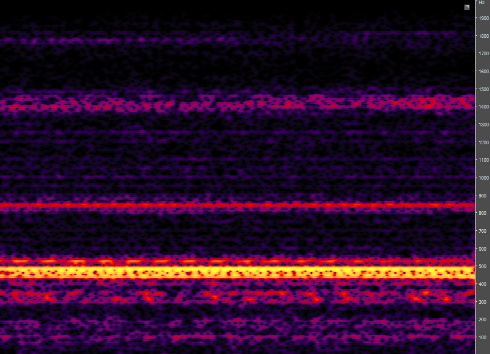
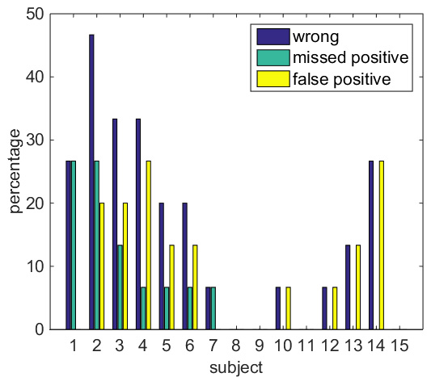

USE OF SONIFICATION OF RADAR DATA FOR NOISE CONTROL
Authors: Kees van den Doel, Adrok Ltd. 49-1 West Bowling Green Street, Edinburgh, EH6 5NX, Scotland, kdoel@adrokgroup.com
Michael Robinson, Adrok Ltd. 49-1 West Bowling Green Street, Edinburgh, EH6 5NX, Scotland, mrobinson@adrokgroup.com
ABSTRACT
Deep sounding radar surveys for geophysical exploration requires the detection of faint reflections from deep subsurface structures. Signal to noise enhancement through extensive data stacking is effective provided the data noise is incoherent and time-invariant. We describe the use of sonification of radar data for quality control of peripheral equipment, specifically to detect unwanted noise with a temporal pattern. The sonification process consists of filtering and timescaling radio frequency data and interpreting the result as audio, a process usually referred to as auralization. A small user study was performed to quantify variations in individual performance in detecting these.
1. INTRODUCTION
Applications of ground penetrating radar [1] are currently mostly limited to shallow depths of a few tens of meters, because of the strong attenuation of radio waves in most subsurface materials at a typical frequency range of 15 - 1000MHz. Losses are caused by conductivity and polarization effects due to moisture content or inherent material properties. Deeper penetration has been achieved with much lower frequencies (1 - 5Mhz) using very large antenna’s in resistive environments such as Martian rock, ice, and permafrost [2, 3, 4].
This work is licensed under Creative Commons Attribution Non Commercial 4.0 International License. The full terms of the License are available at http://creativecommons.org/licenses/by-nc/4.0
Adrok has developed a radar based imaging technology operating in a similar frequency range which has been available to the market for over five years with the express purpose of extending the depth range of conventional GPR surveys, in addition to introducing other novel methods such as spectroscopy [5, 6, 7]. Applications are mainly in geophysical exploration.
Detecting reflections from depths up to the kilometer range requires sensitive digital data recording peripherals attached to the antenna system, and extensive stacking (200; 000 measurements are routinely performed) to increase the signal to noise ratio. Often the surveys are performed in remote hostile environments, see for example Figure 1, and the collected data is later analysed and interpreted. To make sure our data is as clean as possible we have a quality control protocol to check the integrity of the data, checking for possible equipment malfunctions on-site.
Recently we have started deploying data auralization methods to quickly check for possible problems, which usually appear as spurious noise from peripheral equipment mixing in with the radar data. Though we do not use any sophisticated auralization methods, we hope the ICAD community will be interested in this “real-world” application of auralization methods.
2. EQUIPMENT PERFORMANCE MONITORING
The weak reflections from subsurface reflectors require the best signal to noise ratio achievable, as the depth limit of the imaging is restricted by the signal to noise ratio. As such we use extensive data stacking, which means averaging repeated measurements, usually several hundred thousand. Similar stacking is used in seismic, but because the propagation speed of electromagnetic waves is many orders of magnitude higher than the speed of sound, a single measurement takes only tens of microseconds, which allows such large repeats.
The principle of stacking is that coherent signals (i.e., the same in every repeat) add up linearly (proportional to n, with n the number of measurements), but incoherent noise adds up to √n. Therefore the most “dangerous” equipment noise is coherent noise that is synchronized with the measurements, as it will not be relatively reduced through stacking.
During a recent survey in the Canadian arctic an anomaly was detected in the measured data, which was traced to a periodic coherent noise generated by a malfunction in a peripheral electronics component. Our standard visual tools were able to diagnose the problem in one data set, but on closer examination we found a similar problem but much weaker in some other data sets, but it was too weak to show up in standard visual plots like waveforms and spectrograms. However using data auralization the problem was clearly identified.
 Figure 1: A scene from field work in the arctic.3. DATA AURALIZATION
Data is acquired in the form of digitized waveforms at a typical sampling rate of 5GHz with total duration of 20μs. Weak reflections from subsurface structures are detected after stacking using various signal processing methods. In most cases they are too weak to be detected using auralization of the waveform. Background and equipment noise is measured by taking “passive” measurements, with just the listening antenna active. If everything is working properly the result after stacking should be colored noise without any temporal structure. The passive stack is sonified in straightforward fashion by interpreting it as an acoustic wave in a suitable audio range, typically a reduction to a sampling rate of 25KHz. We then listen to the resulting audio to check the audio is time-invariant. Any external (i.e., not resulting from the antenna peripherals) disturbances if present will be incoherent across the recordings in the stack and thus will not result in localized temporal disturbances. Hence if we can hear any structure in the audio, there is a potential problem and further investigation and troubleshooting is initiated.
In Figure 2 we show an example of a signal with a periodic disturbance strong enough to be identified visually through a spectrogram, though not visible in the waveform depicted in Figure 3.
 Figure 2: Spectrogram of a passive recording, scaled into the audio range. The periodic disturbance is clearly visible as well as audible. Audio file fig2.wav in supplementary data.  Figure 3: Waveform corresponding to Figure 2.A more interesting example from the point of view of auralization is depicted in Figure 4. In this case the data looks fine visually, but auralization does reveal a problem similar as in the data corresponding to Figure 2 as it “sounds similar”.
4. USER STUDY
 Figure 4: Spectrogram of passive recording, scaled into the audio range. The noise bands are known incoherent external sources and are not indicative of any problems. No periodic disturbance as in Figure 2 is seen but is audible when listening to the sound. Audio file fig4.wav in supplementary data.It was noticed that some people found it difficult to diagnose subtle effects in the auralizations, even when it was obvious to others. We performed a small (15 subjects) user study to determine how performance varies over individuals. Subjects were instructed to listen to 15 auralizations, 7 of which had an anomaly present. Three examples were given of auralizations with no, faint, and clear periodic disturbances (anomaly). All examples were taken from actual field work. Results are summarized in Figure 5. 8 out of 15 subjects did not miss any anomalies, and 4 subjects had no errors. As expected the faintest anomaly performed worst with only 73% of the subjects detecting it and the clearest anomaly was detected by all subjects.
Clearly there are significant variations between people, all with normal hearing. Probably the detection of anomalies does not depend directly on the frequency selectivity of the ear, but more on the ability to perform auditory scene analysis [8]. It remains to be investigated if training can help improving the ability to detect anomalies.
5. CONCLUSIONS
The detection of weak subsurface radar reflections is depth limited by the signal to noise ratio. The fast acquisition rate of a radar “shot” allows extensive stacking for denoising, provided the background noise is time invariant. In the often harsh conditions encountered during field surveys occasional equipment malfunctions are unavoidable and we have found auralization techniques to be an excellent tool to quickly and reliably identify non time invariant disturbances in our data sets.
We performed a small user study and found that about half the subjects are able to use the auralizations successfully (meaning no missed anomalies and only a few false positives) for anomaly detection. A false positive is not a problem, as further investigation would reveal if the problem is real or not, but a missed anomaly would cause an equipment problem to go unnoticed. Whether training improves the performance is an open question.
We plan to further refine these techniques and collect reference audio signals of various equipment so any change in quality of the sound can be used as a warning sign of a potential problem during field work.
 Figure 5: Score per subject indicating wrong answers, missed anomalies, and false positives. Note subjects 8, 8, 11, and 15 had a perfect score.6. SUPPLEMENTARY DATA
For audio examples referenced in the figures, see: https://dl.dropboxusercontent.com/u/7482624/icad2017.zip
References
- [1] H. M. Jol, Ground Penetrating Radar Theory and Applications. Amsterdam: Elsevier, 2009.
- [2] J. J. Berthelier, S. Bonaime, V. Ciarletti, R. Clairquin, F. Dolon, A. L. Gall, D. Nevejans, R. Ney, and A. Reineix, “Initial results of the Netlander imaging ground-penetrating radar operated on the Antarctic Ice Shelf,” GEOPHYSICAL RESEARCH LETTERS, vol. 32, no. L22305, pp. L22 305, doi:10.1029/2005GL024 203, 2005.
- [3] M. C. Angelopoulos,W. H. Pollard, and N. J. Couture, “The application of CCR and GPR to characterize ground ice conditions at Parsons Lake, Northwest Territories,” Cold Regions Science and Technology, vol. 85, pp. 22–33, 2013.
- [4] R. Jordan, G. Picardi, J. Plaut, K. Wheeler, D. Kirchner, A. Safaeinili, W. Johnson, R. Seu, D. Calabrese, E. Zampolini, A. Cicchetti, R. Huff, D. Gurnett, A. Ivanov, W. Kofman, R. Orosei, T. Thompson, P. Edenhofer, and O. Bombaci, “The Mars express MARSIS sounderinstrument,” Planetary and Space Science, vol. 57, pp. 1975– 1986, 2009.
- [5] K. v. d. Doel, J. Jansen, M. Robinson, G. C. Stove, and G. D. C. Stove, “Ground penetrating abilities of broadband pulsed radar in the 1-70MHz range,” in SEG Technical Program Expanded Abstracts 2014, Denver, 2014, pp. 1770–1774.
- [6] G. Stove and K. van den Doel, “Large depth exploration using pulsed radar,” in ASEG-PESA Technical Program Expanded Abstracts 2015, Perth, 2015, pp. 1–4.
- [7] K. van den Doel, “Modeling and Simulation of a Deeply Penetrating Low Frequency Subsurface Radar System,” in 78th EAGE Conference and Exhibition 2016, Vienna, 2016, pp. doi: 10.3997/2214–4609.201 601 033.
- [8] A. S. Bregman, Auditory Scene Analysis. Cambridge: The MIT Press, 1990.